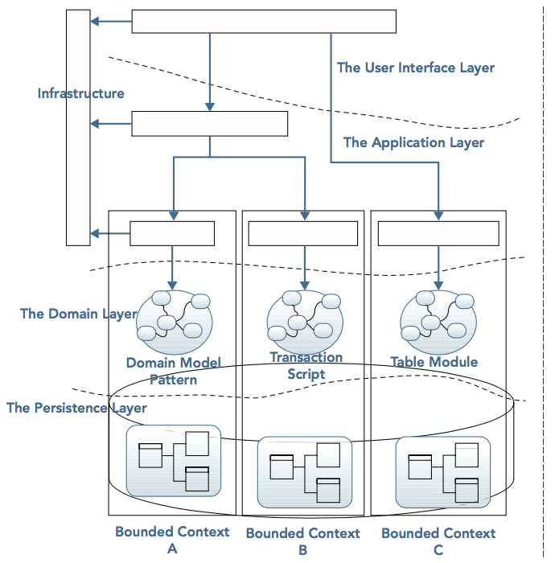
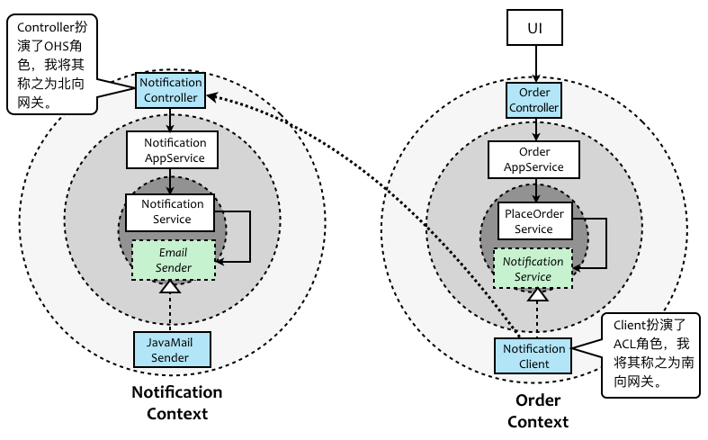

- 001 「战略篇」访谈 DDD 和微服务是什么关系？.md.html
- 002 「战略篇」开篇词：领域驱动设计，重焕青春的设计经典.md.html
- 003 领域驱动设计概览.md.html
- 004 深入分析软件的复杂度.md.html
- 005 控制软件复杂度的原则.md.html
- 006 领域驱动设计对软件复杂度的应对（上）.md.html
- 007 领域驱动设计对软件复杂度的应对（下）.md.html
- 008 软件开发团队的沟通与协作.md.html
- 009 运用领域场景分析提炼领域知识（上）.md.html
- 010 运用领域场景分析提炼领域知识（下）.md.html
- 011 建立统一语言.md.html
- 012 理解限界上下文.md.html
- 013 限界上下文的控制力（上）.md.html
- 014 限界上下文的控制力（下）.md.html
- 015 识别限界上下文（上）.md.html
- 016 识别限界上下文（下）.md.html
- 017 理解上下文映射.md.html
- 018 上下文映射的团队协作模式.md.html
- 019 上下文映射的通信集成模式.md.html
- 020 辨别限界上下文的协作关系（上）.md.html
- 021 辨别限界上下文的协作关系（下）.md.html
- 022 认识分层架构.md.html
- 023 分层架构的演化.md.html
- 024 领域驱动架构的演进.md.html
- 025 案例 层次的职责与协作关系（图文篇）.md.html
- 026 限界上下文与架构.md.html
- 027 限界上下文对架构的影响.md.html
- 028 领域驱动设计的代码模型.md.html
- 029 代码模型的架构决策.md.html
- 030 实践 先启阶段的需求分析.md.html
- 031 实践 先启阶段的领域场景分析（上）.md.html
- 032 实践 先启阶段的领域场景分析（下）.md.html
- 033 实践 识别限界上下文.md.html
- 034 实践 确定限界上下文的协作关系.md.html
- 035 实践 EAS 的整体架构.md.html
- 036 「战术篇」访谈：DDD 能帮开发团队提高设计水平吗？.md.html
- 037 「战术篇」开篇词：领域驱动设计的不确定性.md.html
- 038 什么是模型.md.html
- 039 数据分析模型.md.html
- 040 数据设计模型.md.html
- 041 数据模型与对象模型.md.html
- 042 数据实现模型.md.html
- 043 案例 培训管理系统.md.html
- 044 服务资源模型.md.html
- 045 服务行为模型.md.html
- 046 服务设计模型.md.html
- 047 领域模型驱动设计.md.html
- 048 领域实现模型.md.html
- 049 理解领域模型.md.html
- 050 领域模型与结构范式.md.html
- 051 领域模型与对象范式（上）.md.html
- 052 领域模型与对象范式（中）.md.html
- 053 领域模型与对象范式（下）.md.html
- 054 领域模型与函数范式.md.html
- 055 领域驱动分层架构与对象模型.md.html
- 056 统一语言与领域分析模型.md.html
- 057 精炼领域分析模型.md.html
- 058 彩色 UML 与彩色建模.md.html
- 059 四色建模法.md.html
- 060 案例 订单核心流程的四色建模.md.html
- 061 事件风暴与业务全景探索.md.html
- 062 事件风暴与领域分析建模.md.html
- 063 案例 订单核心流程的事件风暴.md.html
- 064 表达领域设计模型.md.html
- 065 实体.md.html
- 066 值对象.md.html
- 067 对象图与聚合.md.html
- 068 聚合设计原则.md.html
- 069 聚合之间的关系.md.html
- 070 聚合的设计过程.md.html
- 071 案例 培训领域模型的聚合设计.md.html
- 072 领域模型对象的生命周期-工厂.md.html
- 073 领域模型对象的生命周期-资源库.md.html
- 074 领域服务.md.html
- 075 案例 领域设计模型的价值.md.html
- 076 应用服务.md.html
- 077 场景的设计驱动力.md.html
- 078 案例 薪资管理系统的场景驱动设计.md.html
- 079 场景驱动设计与 DCI 模式.md.html
- 080 领域事件.md.html
- 081 发布者—订阅者模式.md.html
- 082 事件溯源模式.md.html
- 083 测试优先的领域实现建模.md.html
- 084 深入理解简单设计.md.html
- 085 案例 薪资管理系统的测试驱动开发（上）.md.html
- 086 案例 薪资管理系统的测试驱动开发（下）.md.html
- 087 对象关系映射（上）.md.html
- 088 对象关系映射（下）.md.html
- 089 领域模型与数据模型.md.html
- 090 领域驱动设计对持久化的影响.md.html
- 091 领域驱动设计体系.md.html
- 092 子领域与限界上下文.md.html
- 093 限界上下文的边界与协作.md.html
- 094 限界上下文之间的分布式通信.md.html
- 095 命令查询职责分离.md.html
- 096 分布式柔性事务.md.html
- 097 设计概念的统一语言.md.html
- 098 模型对象.md.html
- 099 领域驱动设计参考过程模型.md.html
- 100 领域驱动设计的精髓.md.html
- 101 实践 员工上下文的领域建模.md.html
- 102 实践 考勤上下文的领域建模.md.html
- 103 实践 项目上下文的领域建模.md.html
- 104 实践 培训上下文的业务需求.md.html
- 105 实践 培训上下文的领域分析建模.md.html
- 106 实践 培训上下文的领域设计建模.md.html
- 107 实践 培训上下文的领域实现建模.md.html
- 108 实践 EAS 系统的代码模型.md.html
- 109 后记：如何学习领域驱动设计.md.html
028 领域驱动设计的代码模型
理解了限界上下文和分层架构的本质，要确认系统的代码模型自然也就水到渠成。提醒注意，没有必要要求每个团队都遵守一套代码模型，但在同一个项目中，代码模型应作为架构规范要求每个团队成员必须遵守。当然，在遵守规范的同时，每个人需要理解如此划分代码模型的意义所在、价值所在。
遵循领域驱动设计思想的代码模型
结合领域驱动分层架构设计思想，通过引入整洁架构与六边形架构以及上下文映射等设计原则与模式，我们对层、层之间协作、跨限界上下文之间的协作已经有了深入的理解。当我们考虑限界上下文的代码模型时，需要考虑纵向架构除前端之外的所有层次或模块。故而在代码模型设计因素中，需要考虑层与模块之间的职责分离与松散耦合，同时还必须将整个限界上下文作为基本设计单元，照顾到限界上下文之间的协作关系。基于这样的设计因素，结合我自己的项目经验，给出了如下代码模型推荐：
- application
- interfaces
- domain
- repositories
- gateways
- controllers
- persistence
- mq
- client
- ...
以下是对代码结构的说明。
- application：对应了领域驱动设计的应用层，主要内容为该限界上下文中所有的应用服务。
- interfaces：对 gateways 中除 persistence 之外的抽象，包括访问除数据库之外其他外部资源的抽象接口，以及访问第三方服务或其他限界上下文服务的抽象接口。从分层架构的角度讲，interfaces 应该属于应用层，但在实践时，往往会遭遇领域层需要访问这些抽象接口的情形，单独分离 出 interfaces，非常有必要。
- domain：对应了领域驱动设计的领域层，但是我将 repositories 单独分了出来，目的是为了更好地体现它在基础设施层扮演的与外部资源打交道的网关语义。
- repositories：代表了领域驱动设计中战术设计阶段的资源库，皆为抽象类型。如果该限界上下文的资源库并不复杂，可以将 repositories 合并到 domain 中。
- gateways：对应了领域驱动设计的基础设施层，命名为 gateways，是为了更好地体现网关的语义，其下可以视外部资源的集成需求划分不同的包。其中，controllers 相对特殊，它属于对客户端提供接口的北向网关，等同于上下文映射中“开放主机服务（OHS）”的概念。如果为了凸显它的重要性，可以将 controllers 提升到与 application、domain、gateways 同等层次。我之所以将其放在 gateways 之下，还是想体现它的网关本质。persistence 对应了 repositories 抽象，至于其余网关，对应的则是 interfaces 下的抽象，包括消息队列以及与其他限界上下文交互的客户端。例如，通过 http 通信的客户端。其中，client 包下的实现类与 interfaces 下的对应接口组合起来，等同于上下文映射中“防腐层（ACL）”的概念。
我们看到，这里给出的代码结构并未严格按照领域驱动设计的分层架构来划分，我们需要把握以下内容。
- 分层架构的层并非编程语言可以限定的，因此它只是一种设计概念，最后都需要映射到模块或包的概念上。
- 无论代码结构是否表达了层的概念，都需要充分理解分层的意义，并使得整个代码结构在架构上要吻合分层架构的理念。
- 每个模块或包都是单一职责的设计，在整个代码模型中扮演着不同的角色，有的对应了分层架构的层，有的代表了领域驱动设计的设计要素，有的则是为了保证架构的松散耦合。
如果不考虑 Repository 在领域驱动设计中的特殊性，而仅仅将其视为一种网关，则上述结构中 gateways 与 interfaces 恰恰建立了一一对应的对称关系。唯有 controllers 因为不需要依赖注入的关系，没有对应在 interfaces 模块中的抽象定义。考虑到 controllers 对应上下文映射的开放主机服务（OHS）模式，client 对应上下文映射的防腐层（ACL）模式，我们还可以定义如下更符合领域驱动设计特色的代码模型：
- application
- domain
- interfaces
- repositories
- mq
- acl
- ...
- gateways
- ohs
- persistence
- mq
- acl
- ...
代码模型中的 ohs 和 acl 不言自明，充分说明了它们在架构中发挥的作用。倘若我们在团队中明确传递这一设计知识，不仅可以让团队成员更加充分地理解“开放主机服务”与“防腐层”的意义，也更有利于保证限界上下文在整个架构中的独立性。诸如 ohs 与 acl 的命名，也可以认为是代码模型中的一种“统一语言”吧。
虽然都遵循了领域驱动设计，但限界上下文的通信边界会直接影响到代码模型的设计决策。
进程间通信的代码模型
如果限界上下文的边界是进程间通信，则意味着每个限界上下文就是一个单独的部署单元，此即微服务的意义。通常，我们希望一个微服务应该设计为单一职责的高内聚服务，然而麻雀虽小，五脏俱全，在微服务的边界范围内，我认为仍然需要为其建立分层架构。当然，由于微服务的粒度较小，它的代码模型一般采用命名空间级别的方式，整个微服务的代码模型生成一个 JAR 包即可。
架构的设计需要“恰如其分”，在不同的微服务中，各自的领域逻辑复杂程度亦不尽相同，故而不必严格遵循领域驱动设计的规范。Martin Fowler 在《企业应用架构模式》一书中针对不同复杂度的领域，总结了三种不同的领域建模模式，包括事务脚本（Transaction Script）、表模块（Table Module）或领域模型（Domain Model）。在物理隔离的限界上下文内部，我们可以有针对性地选择不同的领域模型。Scott Millett 的著作《Patterns、Principles and Practices of Domain-Driven Design》就此给出了如下图所示的架构：

领域模型不同，代码结构也会受到影响。例如，选择了事务脚本，领域模型就不一定要规避贫血模型，依赖注入也就未必成为必选项了，Repositories 的抽象意义也有所不同。既然本课程讲解领域驱动设计，因此这里主要探讨领域模型的建模方式，即领域驱动战术设计所建议的模式与原则。
还记得前面在讲解层次的职责与协作关系给出的下订单案例吗？当我们选择第三种方案时，给出的代码模型如下所示：
ordercontext.infrastructure
- OrderController
- CreateOrderRequest
- OrderMapper
- EmailSender
- RabbitEventBus
ordercontext.application
- OrderAppService
ordercontext.interfaces
- NotificationService
- EventBus
ordercontext.domain
- OrderRepository
- PlaceOrderService
- Order
- OrderConfirmed
- Notification
- NotificationComposer
现在，为了更好地体现限界上下文之间的协作，我们将本例中的邮件通知放到一个单独的限界上下文 Notification Context 中。Order Context 与 Notification Context 之间采用了进程间通信，则遵循前面的建议，修改代码模型为：
ordercontext
- gateways
- controllers
- OrderController
- messages
- CreateOrderRequest
- persistence
- OrderMapper
- client
- NotificationClient
- mq
- RabbitEventBus
- application
- OrderAppService
- interfaces
- client
- NotificationService
- SendNotificationRequest
- mq
- EventBus
- domain
- PlaceOrderService
- Order
- OrderConfirmed
- Notification
- NotificationComposer
- repositories
- OrderRepository
notificationcontext
- controllers
- NotificationController
- messages
- SendNotificationRequest
- application
- NotificationAppService
- interfaces
- EmailSender
- domain
- NotificationService
- Destination
- Message
- gateways
- JavaMailSender
与之前的代码模型比较，现在的代码模型去掉了 infrastructure 的概念，改以各种 gateway 来表示。同时，还单独定义了 interfaces 模块，包含各种网关对应的抽象接口。
代码模型需要考虑 Order Context 与 Notification Context 之间的跨进程协作。设计的目标是确保彼此之间的解耦合，此时可以引入上下文映射的开放主机服务模式与防腐层模式，同时还应避免遵奉者模式，即避免重用上游上下文的领域模型。因此，针对邮件通知功能，在 Order Context 中定义了调用 Notification Context 上下文服务的客户端 NotificationClient 与对应的抽象接口 NotificationService。这两个类型合起来恰好就是针对 Notification Context 的防腐层。Notification Context 定义了 NotificationController，相当于是该限界上下文的开放主机服务。
Notification Context 定义了自己的领域模型，包括 Destination 与 Message。同时，在 controllers 中定义了服务消息 SendNotificationRequest；Order Context 则针对通知服务的调用，定义了自己的领域模型 Notification，以及匹配服务调用的请求消息对象 SendNotificationRequest。由于 Order Context 与 Notification Context 属于两个不同的微服务，因此在 Order Context 微服务中 gateways/client 的 NotificationClient 会发起对 NotificationController 的调用，这种协作方式如下图所示：

由于限界上下文之间采用进程间通信，因此在 Notification Context 中，提供开放主机服务是必须的。倘若 NotificationController 以 RESTful 服务实现，则在 Order Context 发起对 RESTful 服务的调用属于基础设施的内容，因而必须定义 NotificationService 接口来隔离这种实现机制，使其符合整洁架构思想。
进程内通信的代码结构
如果限界上下文之间采用进程内通信，需要注意如何在代码模型中体现限界上下文的边界，更关键的则是要考虑两个处于相同进程中的限界上下文彼此之间该如何协作。如下是针对各种设计因素的考量。
- 简单：在下游限界上下文的领域层直接实例化上游限界上下文的领域类。
- 解耦：在下游限界上下文的领域层通过上游限界上下文的接口和依赖注入进行调用。
- 迁移：在下游限界上下文中定义一个防腐层，而非直接调用。
- 清晰：要保证领域层代码的纯粹性，应该避免在当前限界上下文中依赖不属于自己的代码模型。
综合考虑，如果确有迁移可能，且架构师需要追求一种纯粹的清晰架构，可以考虑在 interface 中定义自己的服务接口，然后在 gateway/client 中提供一个适配器，在实现该接口的同时，调用上游限界上下文的服务，无论这个服务是领域服务还是应用服务，甚至也可以是领域层的领域对象。因为这个调用的事实已经被 interface 中的接口隔离了。
仍然以下订单场景为例，但此时的 Notification Context 与 Order Context 采用进程内通信，则这种协作方式如下图所示：
与进程间通信的唯一区别在于：NotificationClient 不再通过跨进程调用的方式发起对 RESTful 服务的调用，即使在 Notification Context 中定义了这样的开放主机服务。如上图所示，NotificationClient 直接通过实例化的方式调用了 Notification Context 应用层的 NotificationAppService。这是在 Order Context 中，唯一与 Notification Context 产生了依赖的地方。
如此看来，即使限界上下文采用进程内通信，也仅仅是封装在防腐层中发起调用的实现有所不同，即前面例子中的 NotificationClient，而这其实并不影响代码模型。因而，无论是进程间通信，还是进程内通信，我们设计的代码模型其实是一致的，并不受通信边界的影响。之所以这样设计，理由有二，具体如下。
- 通信边界的划分是物理意义，代码模型的划分是逻辑意义，二者互相并不影响。
- 为保证系统从单体架构向微服务架构迁移，应保证代码结构不受架构风格变化的影响。
例如，假设本书的域名为 practiceddd，对于一个电商系统，无论限界上下文的边界为进程间通信还是进程内通信，上下文的命名空间都应该为practiceddd.ecommerce.{contextname}，其下的层次则是上述提及的代码模型。例如，订单上下文的命名空间为praticeddd.ecommerce.ordercontext，商品上下文的命名空间为praticeddd.ecommerce.productcontext。整个系统的代码结构如下所示：
- praticeddd
-ecommerce
- ordercontext
- application
- interfaces
- domain
- repositories
- gateways
- productcontext
- application
- interfaces
- domain
- repositories
- gateways
- ......
或许有人会提出疑问，如果 ordercontext 与 productcontext 或者其他限界上下文之间存在共同代码，该如何分配？首先我们要认识到，这里的所有组织单元（层、模块或包）都是围绕着领域逻辑来划分的。之所以在限界上下文之下还要分级划分，原因只是各个组织单元的关注点不同而已，至于一些公共的与外部资源有关的代码，都是系统边界之外的第三方框架或平台，这一点在前面介绍架构演进时已反复提及。
基于这样的设计前提，如果两个或多个限界上下文还存在共同代码，只能说明一点：那就是我们之前识别的限界上下文有问题！在第17课“上下文映射的团队协作模式”中，我们提到的“共享内核”模式就是用来解决此类问题的一种方法。一旦提炼或发现了这个隐藏的限界上下文，就应该将它单列出来，与其他限界上下文享受相同的待遇，即处于代码模型的相同层次，然后再通过 interfaces 与 gateways/client 下的相关类配合完成限界上下文之间的协作即可。